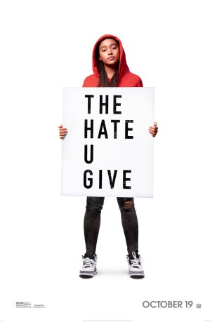
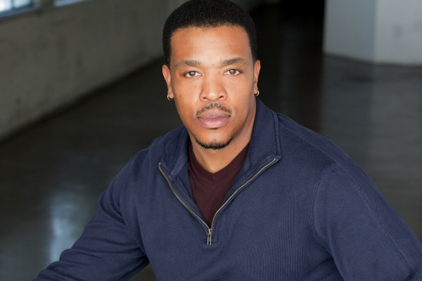
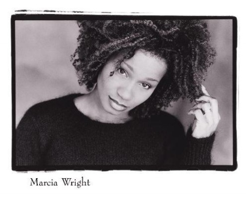
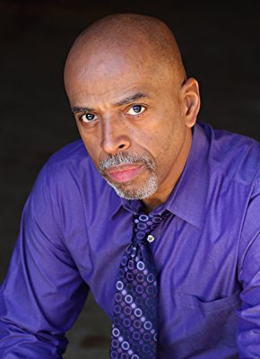

#10503 The Hate U Give
 
 IMDB-Wertung: 7.2 / 10
IMDB-Wertung: 7.2 / 10  Metascore: 81
Metascore: 81 
Starr Carters Leben spielt sich ständig zwischen zwei Welten ab: da ist zum eine das arme, hauptsächliche schwarze Viertel, in dem sie lebt und zum anderen gibt es die reiche, hauptsächlich weiße Privatschule, die sie besucht. Das empfindliche Gleichgewicht zwischen diesen Welten wird erschüttert, als sie Zeugin wird, wie Khalil, ihr bester Freund aus Kindertagen, von einem Polizisten erschossen wird. Nun ist es an Starr, trotz des Drucks, der von allen Seiten auf sie ausgeübt wird, ihre Stimme zu erheben und für Gerechtigkeit einzustehen.
Jahr: 2018
Dauer: 133 Minuten
FSK: 12
Land: USA Studio: Twentieth Century FoxTonspuren: DTS - ,
Untertitel: Deutsch,
Auflösung: 1080p (1920x800) Größe: 5242 MB
Genre: Drama, Krimi
Regisseur: George Tillman Jr.
Drehbuch: Audrey Wells, Angie Thomas
Soundtrack: Dustin O'Halloran
Darsteller:
 Amandla Stenberg als Starr Carter
Amandla Stenberg als Starr Carter Regina Hall als Lisa Carter
Regina Hall als Lisa Carter-  Russell Hornsby als Maverick 'Mav' Carter
 Anthony Mackie als King
Anthony Mackie als King- Issa Rae als April Ofrah
 Common als Carlos
Common als Carlos Algee Smith als Khalil
Algee Smith als Khalil Sabrina Carpenter als Hailey
Sabrina Carpenter als Hailey- K.J. Apa als Chris
- Dominique Fishback als Kenya
- Lamar Johnson als Seven Carter
- TJ Wright als Sekani
- Megan Lawless als Maya
 Rhonda Johnson Dents als Miss Rosalie
Rhonda Johnson Dents als Miss Rosalie Tony Vaughn als Mr. Lewis
Tony Vaughn als Mr. Lewis-  Marcia Wright als Tammy
-  Al Mitchell als Mr. Reuben
 Karan Kendrick als Iesha
Karan Kendrick als Iesha- Javon Johnson als Pastor Eldridge
- Mike Stoudt als Reporter
- Tye Claybrook Jr. als Driver
 Andrene Ward-Hammond als Brenda
Andrene Ward-Hammond als Brenda- Drew Starkey als Cop 115
- Monique Yvette Grant als Neighbor
 Kurt Yue als John
Kurt Yue als John- Marc Fajardo als Camera Man
- DJames Jones als Goon
- Abby Glover als White Girl
- William J. Harrison als White Boy
- Susan Santiago als Gomez
- Brittany Inge als Woman Protestor
- Chantel Bryant als Woman Protestor 2
- Brian Lafontaine als Wilkes
- Parker Sack als Student 1
- Kaleigh Rivera als Student 2
- Chris Cavalier als Student 3
- Ansley Davis als Student 4
- Joe Hardy Jr. als Cop 115's Dad
- Jeff Cole als White Cop 1
- Nick J. McNeil als Black Cop
- Josh Henry als Cop 2
- Brett Gentile als Cop 3
- Kelvin Witherspoon als Gang Member
- Iyana Halley als Bianca
- Dustin Lewis als DA Monroe
- Tanya Christiansen als Diane Carey
- Myles Evans als Chance
- Shay Mack als Waitress
- James Healy Jr. als Headmaster
- Brian Brightman als Officer
Datei: X:\2018(G-M)\Hate U Give, The (2018, FSK12, 1920x800).mkv seit 16.01.2019
Festplatte: HD 2018(G-Z)-2019(A-Z)
 Es gibt insgesamt 138 Filme in der Gruppe '2018(G-M)'
Es gibt insgesamt 138 Filme in der Gruppe '2018(G-M)'